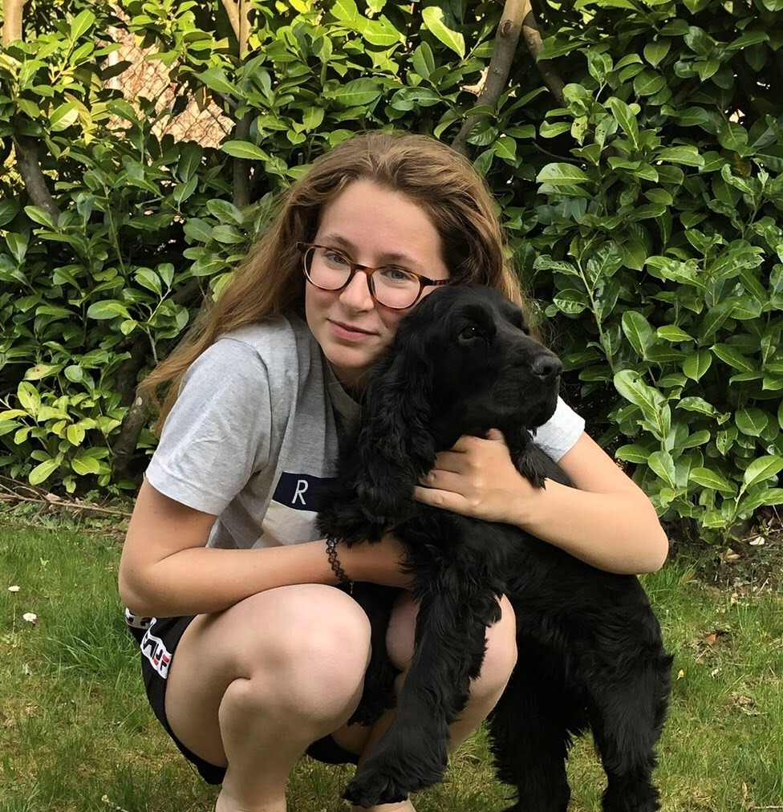
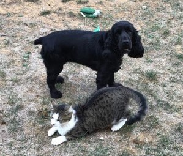
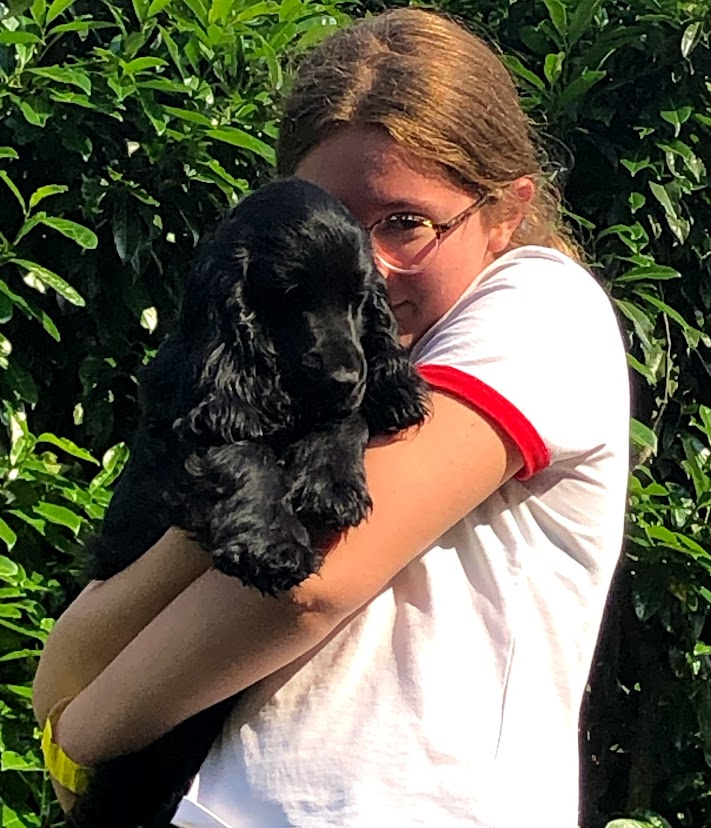

| Accueil | Présentation | L'agility | Aventures | Famille | Réseaux | Autres |
|---|
֍ Je m'appelle Cassilie GUINCHARD et je te présente ma chienne de race cocker spaniel: MONROE. 🥰
Je suis lycéenne (au Lycée Saint Jean à Besançon) et je pratique également l'équitation.🐴❤

֍ Monroe est née le 13/04/2016. Je l'ai eu à ces 2 mois j'étais en CM2, j'étais allée la chercher avec mon père, pendant un jour d'école hihii.
Elle vient d'un élevage de Nimrody en Franche-comté. Elle est LOF et confirmée. Elle n'a pas fait de concours de beauté, mais j'aimerais bien que nous en fassions un.
- Son carractère : elle est très amical avec les chiens, les humains (si elle te connait sinon elle aboit pareil pour les autres animaux), et même mon chat (pas les autres chats étrangers qu'elle ne connait pas sinon elle les courses).

C'est une chienne qui kiffe l'eau aussi (les rivière, lacs...etc) et biensûr l'attention, courir et surtout la nouriturre 🌭.
- Son physique: comme tout les autres cockers, Monroe a de longues oreilles, des yeux assez petits marron et ronds brillants, une truffe symétrique noire (souvent sèche), des moustaches noires et blanches comme il le faut, un cou parfait, un poil soyeux et long.
Mais les cockers n'ont pas qu'une seule couleur de robe, Monroe porte le noir mais il y a aussi le bleu, le feu, le chocolat... et des doubles: noir et feu...etc
Cette race a besoin de beaucoup d'entretien car si on ne les brosses pas, ne pas faire l'hygiènne...etc régulièrement ses poils peuvent semèler, ses oreilles s'infectent...
c'est ça pour tout les chiens.
++ on leurs coupent leurs ongles, nettoie leurs yeux.
Monroe a été en bonne santé pendant longtemps. Comme tout les chiens en générale elle a mangé des trucs qu'ils ne lui plaisaient pas et qu'elle ne digirait pas et donc vomissait; elle se grattait le derrière lorsque ses glandes anales s'irritaient.
Mais jusqu'en octobre où elle avait une grosseur depuis 2-3ans qui fallait enlever. Elle a dû faire
une opération qui lui a obligé de raser ses poils et d'ouvrir son ventre. Elle a donc une cicatrice Mais qui ne se verrait plus par les poils noirs qui reprendrons leurs places.
Elle a eu un bandage pendant 1 semaine puis après avec le temps elle a repris et elle va très bien en ce moment!

Petit complément :
Maintenant, vu que Monroe a eu une portée de chiots (à voir dans la page "Famille"). J'ai en plus dans la famille Sweety! Notre 2e cocker! :)))
Nous pratiquons plus le sport depuis.. Mais nous reprendrons très vite à la maison!

Monroe photo génique 😁
crédit: @mathily5
A voir sur instagram! Superbe photographe canine et une personne extra!!
D'ailleurs voici aussi un montage qu'elle m'a fait: